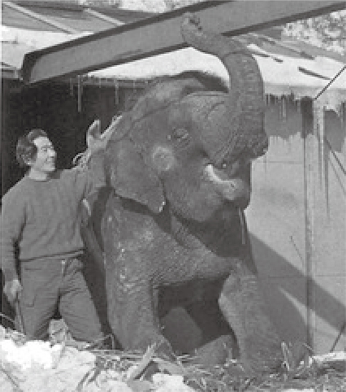

象の花子が湯治した温泉
宮内温泉は１９７１(昭和４６)年、象の花子が湯治に来たことで知られます。
花子は開園当時の旭山動物園にいましたが、クル病にかかり歩行が困難になってきたため湯治に訪れました。
旅館の前に建てたプレハブ「花子のおやど」には大浴槽と寝室があり5年間ほど暮らしました。
病状がよくなってきた頃、暖かい土地で治療することになり１９７６(昭和５１)年、本州へ向けて旅立ちました。
江戸時代の１８５０年代に発見された、北海道では古い温泉です。
お湯は、無色透明で赤い湯花が浴槽の底に沈んでいます。
キシキシとした肌ざわりです。

時間が許す限り、入浴と休憩を交互に行うとより効果的です。のんびりと日々の疲れを癒してくださいませ。
宮内温泉は１９７１(昭和４６)年、象の花子が湯治に来たことで知られます。
花子は開園当時の旭山動物園にいましたが、クル病にかかり歩行が困難になってきたため湯治に訪れました。
旅館の前に建てたプレハブ「花子のおやど」には大浴槽と寝室があり5年間ほど暮らしました。
病状がよくなってきた頃、暖かい土地で治療することになり１９７６(昭和５１)年、本州へ向けて旅立ちました。